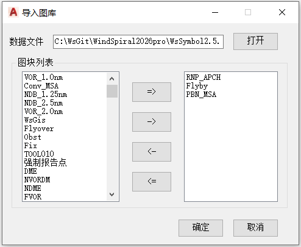

功能简介
【导入图标库】从外部图库（DWG）文件中把自定义图块导入到当前图纸。打开图库后，用导入按钮在“图库图块”和“待导入”之间选择需要的图块，确认后一次性导入当前图纸。
界面预览

界面元素
| 控件 | 说明 |
|---|---|
| 打开（按钮） | 选择要读取的图库 DWG 文件。 |
| 图块列表 | 显示图库中可用的图块。 |
| => / <=（按钮） | 图块全部移入/移出至列表中。 |
| -> / <-（按钮） | 图块单项移入/移出至列表中。 |
| 确定（按钮） | 把待导入的图块写入当前图纸。 |
| 取消（按钮） | 放弃导入并关闭窗口。 |
操作步骤
- 命令行输入
Y90_LoadBlock打开窗口。 - 点击【打开】，选择图库 DWG 文件，列表显示其中图块。
- 用
=>/->把需要的图块移入待导入列表（<-/<=可移出）。 - 点击【确定】完成导入。
提示：导入后的图块即成为当前图纸的块定义，可在后续作图中直接插入使用。